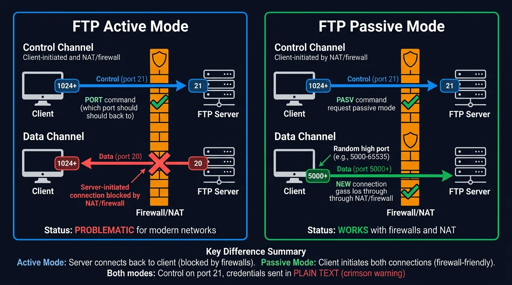
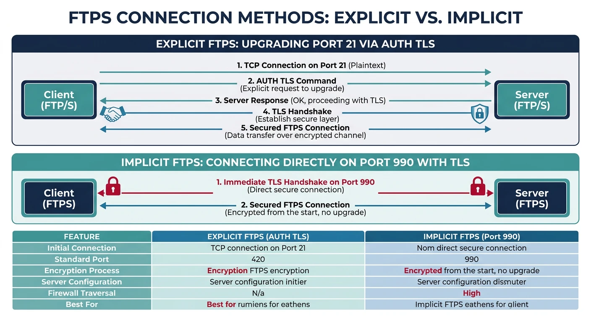
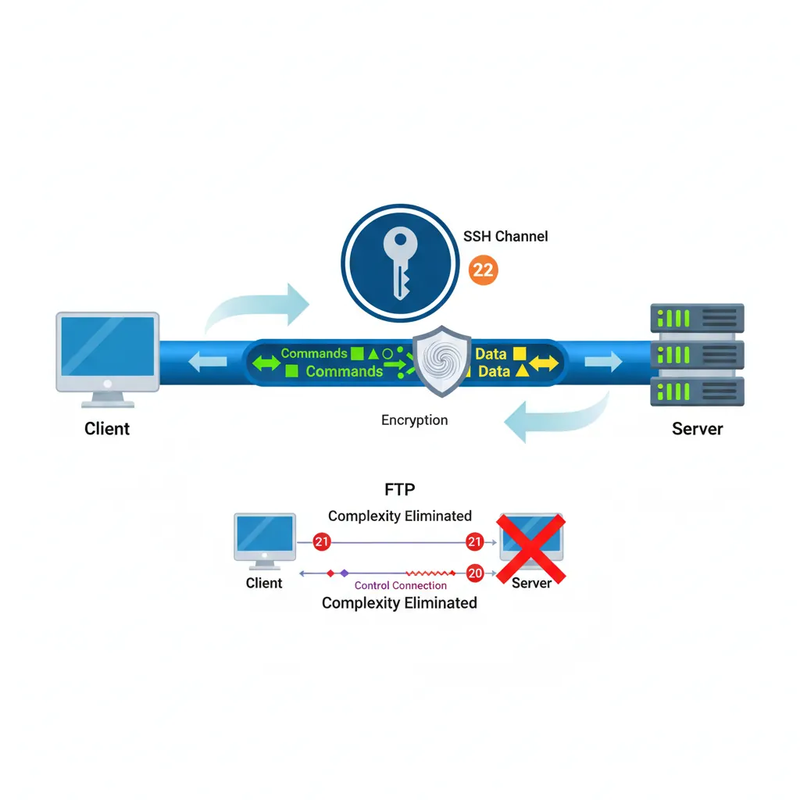
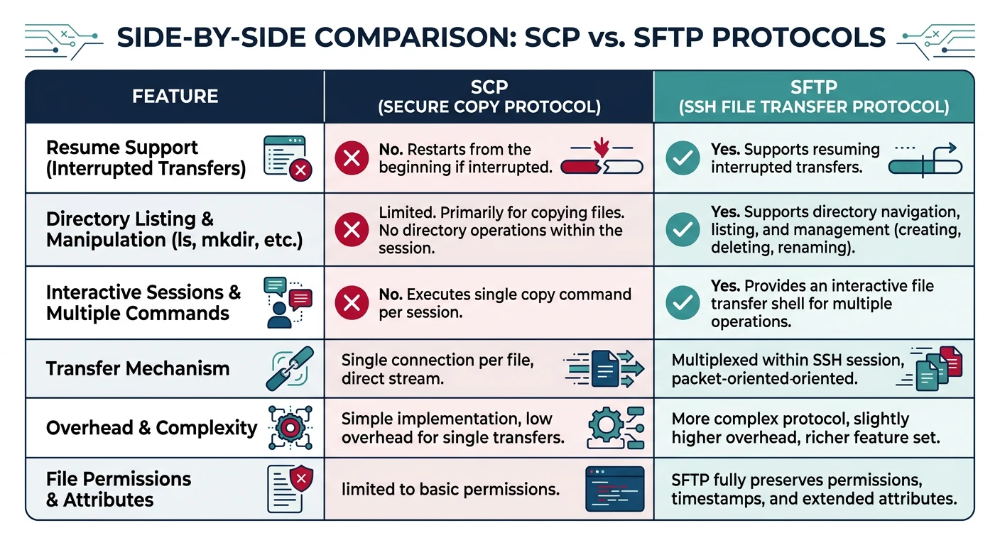
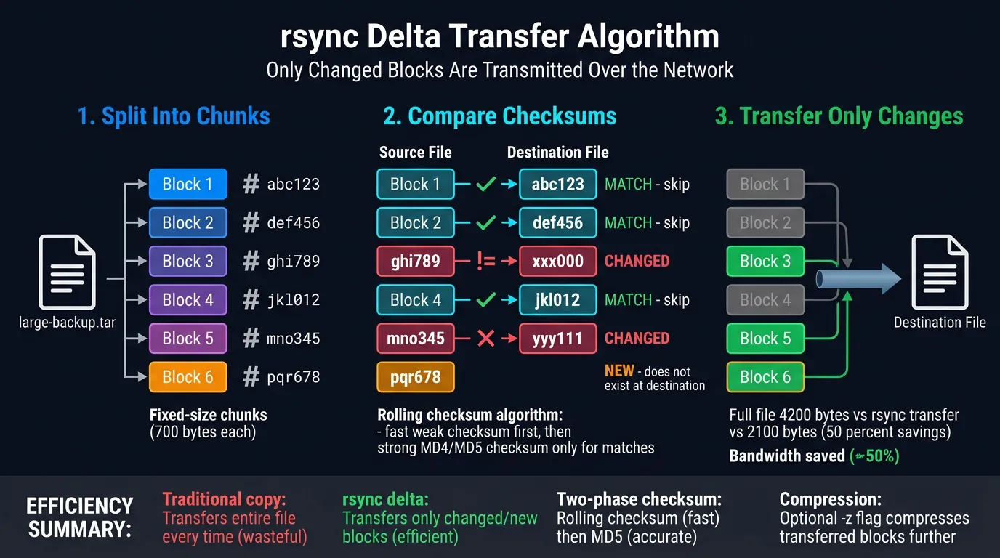

Complete Protocols Master Part 10: File Transfer Protocols
January 31, 2026Wasil Zafar35 min read
Learn file transfer from FTP basics to modern secure methods: SFTP, SCP, FTPS, rsync, and cloud APIs. Understand when to use each protocol and implement secure file transfers.
Moving files between systems is fundamental to computing. From the original FTP (1971) to modern cloud APIs, the methods have evolved significantly—primarily driven by security requirements.
Series Context: This is Part 10 of 20 in the Complete Protocols Master series. File transfer protocols operate at the Application Layer, often leveraging SSH (secure) or TLS (encrypted) for security.
# Protocol Selection Guide
If you need file transfer in 2024+:
1. Use SFTP for:
- Interactive file management
- Automated scripts with SSH keys
- Cross-platform compatibility
2. Use SCP for:
- Quick one-off copies
- Simple scripts
3. Use rsync for:
- Large directories
- Incremental backups
- Bandwidth-limited transfers
4. Use HTTPS/Cloud APIs for:
- Public downloads
- Integration with services
- Browser-based transfers
AVOID plain FTP - credentials sent in clear text!
FTP: File Transfer Protocol (Legacy)
FTP (RFC 959, 1985) is the original file transfer protocol. It's simple but fundamentally insecure—credentials and data are transmitted in plain text.

FTP active mode vs passive mode — active mode has the server connect back to the client (blocked by NAT), while passive mode has the client initiate both connections
Warning
FTP Security Issues
FTP Security Problems:
1. CREDENTIALS IN PLAIN TEXT
USER alice
PASS secret123 ← Anyone can sniff this!
2. DATA IN PLAIN TEXT
All transferred files visible to eavesdroppers
3. ACTIVE MODE FIREWALL ISSUES
Server connects BACK to client (problematic with NAT)
4. NO DATA INTEGRITY
No checksums, no verification
DO NOT USE FTP for:
• Anything with credentials
• Sensitive data
• Production systems
• Internet-facing servers
Only acceptable use: Anonymous public downloads
(And even then, use HTTPS instead)
FTP Modes
Active vs Passive FTP
FTP Connection Modes:
ACTIVE MODE (Original):
1. Client connects to server port 21 (control)
2. Client sends PORT command with its IP:port
3. Server connects FROM port 20 TO client's port
Problem: Server → Client connection blocked by NAT/firewalls
PASSIVE MODE (Modern):
1. Client connects to server port 21 (control)
2. Client sends PASV command
3. Server returns IP:port for data connection
4. Client connects TO that port
Solution: All connections initiated by client (firewall-friendly)
Commands:
USER username - Login username
PASS password - Login password
CWD /path - Change directory
PWD - Print working directory
LIST - List files
RETR file - Download file
STOR file - Upload file
DELE file - Delete file
QUIT - Disconnect
# FTP client example (educational only - use SFTP in practice!)
from ftplib import FTP
def demonstrate_ftp_commands():
"""Show FTP command structure"""
print("FTP Command Flow:")
print("=" * 50)
commands = [
("USER anonymous", "Login with username"),
("PASS email@example.com", "Password (visible!)"),
("PWD", "Print working directory"),
("PASV", "Enter passive mode"),
("LIST", "List directory contents"),
("CWD /pub", "Change directory"),
("TYPE I", "Binary transfer mode"),
("RETR file.zip", "Download file"),
("STOR upload.txt", "Upload file"),
("QUIT", "Disconnect"),
]
for cmd, desc in commands:
print(f" {cmd:25} - {desc}")
print("\nPython FTP example:")
print("""
from ftplib import FTP
ftp = FTP('ftp.example.com')
ftp.login('user', 'password') # ⚠️ Sent in plain text!
ftp.cwd('/files')
ftp.nlst() # List files
with open('local.txt', 'wb') as f:
ftp.retrbinary('RETR remote.txt', f.write)
ftp.quit()
""")
print("\n⚠️ WARNING: Use SFTP instead for any real use case!")
demonstrate_ftp_commands()
FTPS: FTP over TLS
FTPS adds TLS encryption to FTP. It's better than plain FTP but still carries FTP's complexity (multiple ports, active/passive modes).

Explicit FTPS (port 21, AUTH TLS upgrade) vs Implicit FTPS (port 990, immediate TLS) — two approaches to adding encryption to legacy FTP
FTPS Modes
Explicit vs Implicit FTPS
FTPS Variants:
EXPLICIT FTPS (FTPES):
• Connect to port 21
• Issue AUTH TLS command
• Upgrade connection to TLS
• More firewall-friendly
IMPLICIT FTPS:
• Connect to port 990 (already TLS)
• No upgrade needed
• Older method, less common
Example Explicit FTPS:
C: [Connect to port 21]
S: 220 FTP Server Ready
C: AUTH TLS
S: 234 Proceeding with TLS handshake
[TLS handshake]
C: USER alice
S: 331 Password required
C: PASS secret
S: 230 Logged in
When to use FTPS:
• Legacy systems that require FTP compatibility
• Existing FTP infrastructure
• When SFTP is not available
# FTPS example
from ftplib import FTP_TLS
def demonstrate_ftps():
"""Show FTPS connection"""
print("FTPS (FTP over TLS) Example:")
print("=" * 50)
print("""
from ftplib import FTP_TLS
# Explicit FTPS (port 21, upgrade to TLS)
ftps = FTP_TLS('ftp.example.com')
ftps.login('user', 'password')
ftps.prot_p() # Enable data channel encryption
ftps.nlst()
ftps.quit()
# Implicit FTPS (port 990, TLS from start)
ftps = FTP_TLS()
ftps.connect('ftp.example.com', 990)
ftps.login('user', 'password')
ftps.prot_p()
""")
print("\nFTPS Ports:")
print(" 21 - Control (explicit, upgrades to TLS)")
print(" 990 - Control (implicit, TLS from start)")
print(" 989 - Data (implicit)")
print("\n✅ Better than FTP, but SFTP is simpler")
demonstrate_ftps()
SFTP: SSH File Transfer Protocol
SFTP runs over SSH (port 22), providing strong encryption, authentication, and integrity. It's the modern standard for secure file transfer.

SFTP runs entirely within a single SSH channel on port 22 — commands and data share one encrypted connection, eliminating FTP's multi-port complexity
SFTP ≠ FTP over SSH: SFTP is a completely different protocol that happens to run over SSH. It shares nothing with FTP except the name. Don't confuse with FTPS (FTP + TLS).
SFTP Features
Why SFTP is Better
SFTP Advantages:
1. SINGLE PORT (22)
No active/passive mode complexity
Firewall-friendly
2. STRONG AUTHENTICATION
Password, SSH keys, certificates
Multi-factor support
3. FULL ENCRYPTION
Data and commands encrypted
Cannot be sniffed
4. DATA INTEGRITY
Built-in checksums
5. RICH OPERATIONS
Rename, chmod, chown, symlinks
Resume interrupted transfers
SFTP Commands:
cd /path - Change remote directory
lcd /path - Change local directory
ls - List remote files
lls - List local files
get file - Download
put file - Upload
rm file - Delete
mkdir dir - Create directory
chmod 755 file - Change permissions
# SFTP command-line examples
# Interactive session
sftp user@server.example.com
sftp> ls
sftp> cd /data
sftp> get report.csv
sftp> put local-file.txt
sftp> exit
# Non-interactive (batch mode)
sftp user@server <<EOF
cd /data
get report.csv
put upload.txt
exit
EOF
# Using SSH key (no password)
sftp -i ~/.ssh/mykey user@server
# Specify port
sftp -P 2222 user@server
# Download specific file
sftp user@server:/path/to/file.txt ./local/
# SFTP with Python (paramiko library)
import os
def demonstrate_sftp():
"""Show SFTP operations with paramiko"""
print("SFTP with Python (paramiko)")
print("=" * 50)
print("""
import paramiko
# Create SSH client
ssh = paramiko.SSHClient()
ssh.set_missing_host_key_policy(paramiko.AutoAddPolicy())
# Connect with password
ssh.connect('server.example.com',
username='user',
password='password')
# Or connect with key
ssh.connect('server.example.com',
username='user',
key_filename='/path/to/key')
# Open SFTP session
sftp = ssh.open_sftp()
# List directory
for item in sftp.listdir('/data'):
print(item)
# Download file
sftp.get('/remote/file.txt', '/local/file.txt')
# Upload file
sftp.put('/local/upload.txt', '/remote/upload.txt')
# File operations
sftp.chmod('/remote/script.sh', 0o755)
sftp.rename('/remote/old.txt', '/remote/new.txt')
# Stat file (get info)
info = sftp.stat('/remote/file.txt')
print(f"Size: {info.st_size}")
sftp.close()
ssh.close()
""")
print("\nInstall: pip install paramiko")
demonstrate_sftp()
SCP: Secure Copy
SCP (Secure Copy Protocol) is a simpler alternative to SFTP for quick file copies. It uses SSH for transport but has fewer features.

SCP vs SFTP feature comparison — SCP offers simplicity and speed but lacks resume, directory listing, and interactive sessions that SFTP provides
SCP vs SFTP
When to Use Which
SCP vs SFTP:
SCP:
✅ Simple, one-liner copies
✅ Fast (minimal protocol overhead)
❌ No directory listing
❌ No resume
❌ No rename/delete
❌ Deprecated in OpenSSH 9.0 (use SFTP)
SFTP:
✅ Full file management
✅ Resume interrupted transfers
✅ Interactive session
✅ Actively maintained
❌ Slightly more overhead
Modern Recommendation:
• Use SFTP for everything
• SCP only for backward compatibility
• rsync for large/incremental transfers
# SCP command examples
# Copy local file to remote
scp file.txt user@server:/path/
# Copy remote file to local
scp user@server:/path/file.txt ./local/
# Copy directory recursively
scp -r local-dir/ user@server:/path/
# Specify SSH key
scp -i ~/.ssh/mykey file.txt user@server:/path/
# Specify port
scp -P 2222 file.txt user@server:/path/
# Preserve permissions and timestamps
scp -p file.txt user@server:/path/
# Copy between two remote hosts
scp user1@server1:/file user2@server2:/path/
# Limit bandwidth (KB/s)
scp -l 1000 large-file.zip user@server:/path/
rsync: Efficient Synchronization
rsync is the gold standard for efficient file synchronization. It only transfers differences, making it perfect for backups and large directory sync.

rsync delta transfer algorithm — files are split into chunks, checksums are compared, and only changed blocks are transmitted over the network
Delta Transfer
How rsync Works
rsync Delta Algorithm:
1. Source splits file into chunks
2. Calculates rolling checksum for each chunk
3. Sends checksums to destination
4. Destination checks which chunks already exist
5. Only missing/changed chunks transferred
Example:
100MB file, 1MB changed → Only ~1MB transferred!
Key Features:
• Incremental transfer (only changes)
• Compression during transfer
• Preserve permissions, timestamps, symlinks
• Delete files not in source (--delete)
• Dry-run mode (--dry-run)
• Progress display (--progress)
• Bandwidth limiting (--bwlimit)
# rsync command examples
# Basic sync (local)
rsync -av source/ destination/
# Remote sync over SSH
rsync -av local-dir/ user@server:/remote/dir/
# Common options
rsync -avz --progress source/ dest/
# -a = archive (preserve everything)
# -v = verbose
# -z = compress during transfer
# --progress = show progress
# Mirror with delete (dangerous!)
rsync -av --delete source/ dest/
# Dry run (see what would happen)
rsync -av --dry-run source/ dest/
# Exclude patterns
rsync -av --exclude='*.log' --exclude='.git' source/ dest/
# Include/exclude from file
rsync -av --exclude-from='exclude.txt' source/ dest/
# Bandwidth limit (KB/s)
rsync -av --bwlimit=1000 source/ dest/
# Backup with timestamp
rsync -av --backup --suffix=".$(date +%Y%m%d)" source/ dest/
# Resume partial transfer
rsync -av --partial --progress large-file.zip user@server:/path/
# rsync automation example
import subprocess
import datetime
def rsync_backup(source, dest, options=None):
"""Run rsync backup with standard options"""
default_opts = [
'-av', # Archive mode, verbose
'--progress', # Show progress
'--delete', # Mirror source (remove extra files)
'--exclude=.git',
'--exclude=node_modules',
'--exclude=__pycache__',
]
opts = default_opts + (options or [])
cmd = ['rsync'] + opts + [source, dest]
print(f"Running: {' '.join(cmd)}")
print("=" * 50)
# In real use, run subprocess
# subprocess.run(cmd, check=True)
return cmd
# Examples
print("rsync Backup Examples")
print("=" * 50)
# Local backup
print("\n1. Local backup:")
rsync_backup('/home/user/projects/', '/backup/projects/')
# Remote backup
print("\n2. Remote backup:")
rsync_backup('/home/user/data/', 'user@backup-server:/backups/data/')
# With bandwidth limit
print("\n3. Limited bandwidth:")
rsync_backup('/home/user/large/',
'user@server:/remote/',
['--bwlimit=5000']) # 5 MB/s